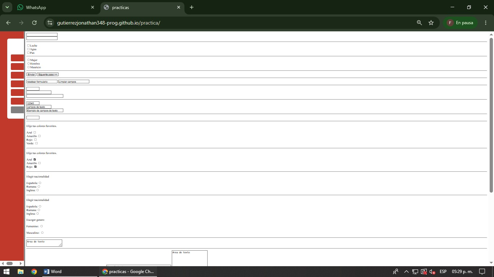
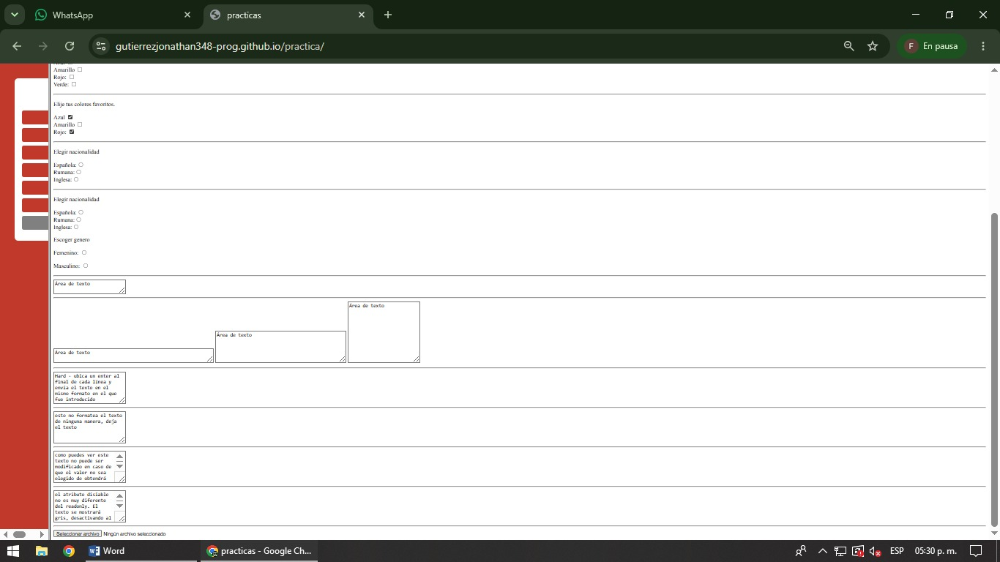

En esta práctica se estudia la creación de formularios utilizando HTML para recopilar información de los usuarios. La estructura principal se desarrolla mediante la etiqueta form, la cual contiene todos elementos del formulario. Se utiliza la etiqueta input en diferentes tipos, como text para capturar texto, password para ocultar caracteres, radio para seleccionar una única opción, checkbox para seleccionar varias opciones, submit para enviar la información y reset para restablecer los datos del formulario. También se emplean las etiquetas textarea para introducir textos largos y select junto con option para crear listas desplegables. Estos elementos permiten una interacción directa entre el usuario y la página web. El objetivo de esta práctica es aprender a diseñar formularios funcionales que permitan capturar y gestionar información de manera eficiente.